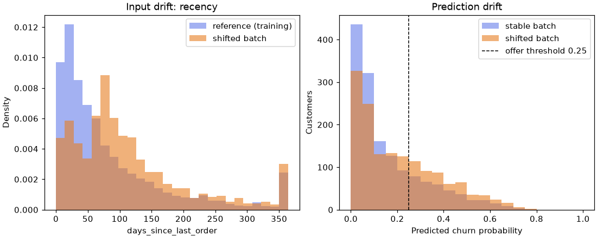

🚢 Lesson 12.2: Serving and Monitoring Models
Turn the churn model into a small web service that other programs can call, make it refuse bad input politely, and learn to notice when the world it was trained on starts to change.
🎯 Learning Objectives
By the end of this lesson, you will be able to:
- Package a fitted
Pipelinewith the metadata a server needs (features, dtypes, threshold, version) - Describe valid input with a pydantic model and read its validation errors
- Serve predictions with FastAPI, test every endpoint with
TestClient, and start the server withuvicorn - Measure input drift with the Population Stability Index and prediction drift with simple batch statistics
- Tell a data-quality bug from a real change in customers, and say which one needs labels to confirm
In This Lesson
🧭 From Notebook to Service
So far every model in this course has lived inside a notebook. You fit it, you scored the test set, you looked at a chart. Pinecrest's customer-care tool, its email system and its weekly reporting job cannot open your notebook. They need to send a customer's numbers somewhere and get a churn probability back, at any hour, without you in the room. Putting a model where other software can reach it is called serving or deployment, and keeping an eye on it afterwards is monitoring.
💡 Mental Model: The Kitchen and the Order Window
Think of the fitted model as a kitchen that can cook exactly one dish. Customers never walk into the kitchen. They hand an order through a window, and the person at the window checks it first: is every field filled in, is "Denver" really one of our stores, is a discount share of 1.4 even possible? Bad orders go straight back with a note saying what is wrong. Good orders go to the kitchen, and a plate comes back out.
In this lesson FastAPI is the window, pydantic is the person checking orders, and your scikit-learn Pipeline is the kitchen. Monitoring is the manager who notices, weeks later, that orders have quietly changed: suddenly everyone wants it extra spicy.
🤔 Why This Matters
A model nobody can call is a report, not a product. Most of the work of deployment is not machine learning at all: it is agreeing on what the input looks like, refusing input that does not match, and making sure the server builds exactly the same table the model was trained on. The last part of the lesson covers the slow failure that no error message announces: the customers change, and the model keeps answering as if they had not.
📦 Package the Model
You finished Lesson 12.1 with the model you will serve: the random-forest churn pipeline in churn_final.skops, and its model card churn_final.json (configuration, data fingerprint, test AUC, the reviewed skops types). Copy both into a new folder for this lesson, next to the data/ folder. If you do not have them, or want this page to run on its own, the next block recreates exactly what 12.1's project saved (without the MLflow logging, which serving does not need).
# Recreates Lesson 12.1's churn_final.skops and churn_final.json.
# Skip this block if you already have both files from 12.1.
import hashlib
import json
from importlib.metadata import version
import numpy as np
import pandas as pd
import skops.io as sio
from sklearn.compose import ColumnTransformer
from sklearn.ensemble import RandomForestClassifier
from sklearn.impute import SimpleImputer
from sklearn.metrics import roc_auc_score
from sklearn.model_selection import train_test_split
from sklearn.pipeline import Pipeline, make_pipeline
from sklearn.preprocessing import OneHotEncoder, StandardScaler
CONFIG = {
"data_file": "data/customers_churn.csv",
"numeric": ["tenure_months", "orders_12m", "spend_12m", "avg_order_value", "days_since_last_order",
"returns_12m", "return_rate", "support_tickets_12m", "discount_share", "app_user", "email_opens_90d"],
"categorical": ["home_store", "region", "age_group", "loyalty_tier", "preferred_category"],
"target": "churned",
"test_size": 0.25,
"seed": 42,
"cv_folds": 5,
"experiment": "churn-project",
}
def file_sha256(path):
digest = hashlib.sha256()
with open(path, "rb") as f:
for chunk in iter(lambda: f.read(1_000_000), b""):
digest.update(chunk)
return digest.hexdigest()
setup_data = pd.read_csv(CONFIG["data_file"])
setup_X = setup_data[CONFIG["numeric"] + CONFIG["categorical"]]
setup_y = setup_data[CONFIG["target"]]
s_train, s_test, sy_train, sy_test = train_test_split(
setup_X, setup_y, test_size=CONFIG["test_size"], stratify=setup_y, random_state=CONFIG["seed"])
setup_prep = ColumnTransformer([
("num", make_pipeline(SimpleImputer(strategy="median"), StandardScaler()), CONFIG["numeric"]),
("cat", make_pipeline(SimpleImputer(strategy="most_frequent"), OneHotEncoder(handle_unknown="ignore")),
CONFIG["categorical"]),
])
forest = RandomForestClassifier(n_estimators=200, min_samples_leaf=5, n_jobs=-1, random_state=CONFIG["seed"])
setup_model = Pipeline([("prep", setup_prep), ("model", forest)]).fit(s_train, sy_train)
setup_auc = roc_auc_score(sy_test, setup_model.predict_proba(s_test)[:, 1])
sio.dump(setup_model, "churn_final.skops")
with open("churn_final.json", "w") as f:
json.dump({
"model_file": "churn_final.skops",
"estimator": "forest",
"params": {k: v for k, v in forest.get_params().items() if v is not None},
"config": CONFIG,
"data_sha256": file_sha256(CONFIG["data_file"]),
"test_auc": round(setup_auc, 4),
"environment": {pkg: version(pkg) for pkg in ["scikit-learn", "pandas", "numpy", "skops"]},
"skops_trusted_types": ["numpy.dtype", "sklearn.tree._tree.Tree"],
"intended_use": "Rank customers for retention offers; not for decisions about individual accounts.",
}, f, indent=2)
print(f"test AUC {setup_auc:.4f}: saved churn_final.skops and churn_final.json")Output
test AUC 0.8612: saved churn_final.skops and churn_final.jsonNow load the model the way a server will: read the card first, check the data fingerprint, and load the skops file trusting only the types the card says were reviewed. Then rebuild the same split, so you have test customers to work with.
from sklearn.dummy import DummyClassifier
with open("churn_final.json") as f:
card = json.load(f)
churn_model = sio.load(card["model_file"], trusted=card["skops_trusted_types"])
print(card["estimator"], card["test_auc"], card["skops_trusted_types"])
print("data unchanged:", file_sha256(card["config"]["data_file"]) == card["data_sha256"])
cfg = card["config"]
NUMERIC, CATEGORICAL = cfg["numeric"], cfg["categorical"]
FEATURES = NUMERIC + CATEGORICAL
customers = pd.read_csv(cfg["data_file"])
X_train, X_test, y_train, y_test = train_test_split(
customers[FEATURES], customers[cfg["target"]], test_size=cfg["test_size"],
stratify=customers[cfg["target"]], random_state=cfg["seed"])
test_auc = roc_auc_score(y_test, churn_model.predict_proba(X_test)[:, 1])
baseline = DummyClassifier(strategy="prior").fit(X_train, y_train)
print(f"baseline AUC {roc_auc_score(y_test, baseline.predict_proba(X_test)[:, 1]):.3f} model AUC {test_auc:.4f}")Output
forest 0.8612 ['numpy.dtype', 'sklearn.tree._tree.Tree']
data unchanged: True
baseline AUC 0.500 model AUC 0.8612The same AUC as the card: the model survived the trip from 12.1 intact, and it clearly beats the do-nothing baseline. The card describes where the model came from. A server needs a few more facts about how to use it, because it cannot look back into your notebook:
- The feature list and their dtypes. The server will build a one-row table from JSON, and it must look exactly like
X_train: same columns, same order, same types. - The decision threshold. With the costs from Lesson 1.4 (a retention offer costs $15, and an offer that reaches a real churner is worth $60), an offer pays off when the churn probability is above 15 / 60 = 0.25. Lesson 13.1 confirms this threshold with
TunedThresholdClassifierCV. - A version name, so every prediction can say which model made it.
- What normal looks like: the average predicted probability and offer rate on data the model has not memorized. You will compare live traffic with these numbers later.
For the last item, predictions on the training rows would be too confident, because the model has seen those customers (a random forest almost remembers them). cross_val_predict gives an honest version: each training customer is scored by a copy of the pipeline fitted on the other folds (Lesson 1.3). It refits five copies and leaves churn_model untouched.
from sklearn.model_selection import cross_val_predict
oof_proba = cross_val_predict(churn_model, X_train, y_train, cv=5, method="predict_proba")[:, 1]
THRESHOLD = 0.25
serving = {
"model_card": "churn_final.json",
"version": "churn-forest-2025-06-30",
"features": FEATURES,
"dtypes": {col: str(dtype) for col, dtype in X_train.dtypes.items()},
"threshold": THRESHOLD,
"reference_mean_probability": round(float(oof_proba.mean()), 4),
"reference_offer_rate": round(float((oof_proba >= THRESHOLD).mean()), 4),
}
with open("churn_serving.json", "w") as f:
json.dump(serving, f, indent=2)
reference = X_train.assign(churn_probability=oof_proba)
reference.to_csv("churn_reference.csv", index=False)
print(sorted(serving))
print(serving["dtypes"]["age_group"], serving["dtypes"]["email_opens_90d"], serving["dtypes"]["app_user"])
print(serving["reference_mean_probability"], serving["reference_offer_rate"])Output
['dtypes', 'features', 'model_card', 'reference_mean_probability', 'reference_offer_rate', 'threshold', 'version']
str float64 int64
0.1662 0.2436The service folder now holds everything the server needs, and none of it is a pickle: churn_final.skops (the model), churn_final.json (where it came from), churn_serving.json (how to use it), and churn_reference.csv (the training inputs with honest predictions, kept for drift checks). The dtype str is pandas' text type; you will see in a moment why it matters.
🛑 Only Load Model Files You Trust
As Lesson 12.1 showed, a pickle (joblib.load) can run arbitrary code when it is loaded, which is why this service uses skops. Even with skops, the trusted list is a promise you make: the server trusts exactly the types written in the model card, which a person reviewed when the model was saved. A server that loads model files from uploads, email attachments or unknown downloads, in any format, is a server that runs a stranger's choices.
⚠️ Pin the Library Versions
A saved scikit-learn model is only guaranteed to load correctly in the same scikit-learn version that saved it. That is why the model card records the environment, and why the server's environment should install the exact versions from your requirements.txt. Loading in another version can print an InconsistentVersionWarning: treat it as an error, not as noise.
🛂 Validate Input with pydantic
Inside a notebook you control the data. Behind an API, anyone can send anything: a missing field, a misspelled store, a discount share of 140%, the word "yes" where a 0 or 1 belongs. The model will not complain about most of these. It will quietly return a number, and that number will be nonsense. So the first job of a service is to describe valid input precisely and reject everything else.
pydantic does this with ordinary Python classes. Each attribute has a type, and Field adds limits such as ge (greater than or equal) and le (less than or equal). A Literal type allows only the listed values. Put the schema in its own file, schemas.py, so both the notebook and the server can import it:
"""schemas.py: what a valid request to the churn API looks like."""
from typing import Literal
from pydantic import BaseModel, ConfigDict, Field
Store = Literal["Online", "Boise", "Bend", "Flagstaff", "Asheville"]
Region = Literal["Northwest", "Southwest", "Southeast", "Mountain", "Midwest", "Northeast"]
AgeGroup = Literal["18-24", "25-34", "35-44", "45-54", "55-64", "65+"]
Tier = Literal["Basic", "Silver", "Gold"]
Category = Literal["Accessories", "Apparel", "Camp Kitchen", "Climbing", "Footwear",
"Packs", "Sleeping", "Snow", "Tents"]
class Customer(BaseModel):
"""One customer's 12-month summary, in the same units the model was trained on."""
model_config = ConfigDict(extra="forbid") # unknown fields are an error, not ignored
tenure_months: int = Field(ge=1, le=600)
orders_12m: int = Field(ge=0, le=500)
spend_12m: float = Field(ge=0)
avg_order_value: float = Field(ge=0)
days_since_last_order: int = Field(ge=0, le=365)
returns_12m: int = Field(ge=0)
return_rate: float = Field(ge=0, le=1)
support_tickets_12m: int = Field(ge=0)
discount_share: float = Field(ge=0, le=1)
app_user: int = Field(ge=0, le=1)
email_opens_90d: float | None = Field(default=None, ge=0) # may be unknown
home_store: Store
region: Region
age_group: AgeGroup | None = None # may be unknown
loyalty_tier: Tier
preferred_category: Category
class Score(BaseModel):
"""What the API sends back for one customer."""
churn_probability: float
offer: bool
model_version: strTwo fields may be missing, because they are missing in the training data too: email_opens_90d (no tracking data) and age_group (never given). Everything else is required. Now try it on Pinecrest's first test customer, written as the plain dictionary a JSON request would turn into:
from pydantic import ValidationError
from schemas import Customer
example = {
"tenure_months": 90, "orders_12m": 5, "spend_12m": 1378.70, "avg_order_value": 275.74,
"days_since_last_order": 53, "returns_12m": 1, "return_rate": 0.306, "support_tickets_12m": 1,
"discount_share": 0.14, "app_user": 0, "email_opens_90d": 5, "home_store": "Asheville",
"region": "Southeast", "age_group": "25-34", "loyalty_tier": "Gold", "preferred_category": "Apparel",
}
customer = Customer(**example)
print(customer.email_opens_90d, type(customer.email_opens_90d).__name__)
print(Customer(**{**example, "orders_12m": "5"}).orders_12m + 1)Output
5.0 float
6pydantic does more than check: it converts. The integer 5 became the float 5.0 that the schema asked for, and the string "5" became the integer 5 (so adding 1 works). This "lax mode" is friendly to callers that send numbers as text. Now send a bad order:
bad = {**example, "discount_share": 1.4, "home_store": "Denver", "app_user": "yes"}
del bad["tenure_months"]
try:
Customer(**bad)
except ValidationError as err:
print(err.error_count(), "problems")
for problem in err.errors():
print(problem["loc"], "->", problem["msg"])Output
4 problems
('tenure_months',) -> Field required
('discount_share',) -> Input should be less than or equal to 1
('app_user',) -> Input should be a valid integer, unable to parse string as an integer
('home_store',) -> Input should be 'Online', 'Boise', 'Bend', 'Flagstaff' or 'Asheville'Every problem is reported at once, each with its location and a message a person can act on. That is exactly what the caller of an API needs: not "something went wrong", but "fix these four fields".
💡 Why Limits Belong in the Schema
Ask what the model would do with discount_share=1.4. A tree model treats it like the largest discount share it ever saw, so it returns a confident-looking probability for an impossible customer. The schema is where you write down what "possible" means. The limits here come from the data dictionary (shares between 0 and 1, recency within the 12-month window), not from the model.
🚀 Serve It with FastAPI
FastAPI turns ordinary Python functions into web endpoints. You decorate a function with the HTTP method and path, and annotate its argument with a pydantic model. FastAPI then reads the JSON body, validates it with your schema, calls the function only if the input is valid, and turns the return value back into JSON. Here is the whole service, in a file called serve.py:
"""serve.py: the Pinecrest churn-scoring API."""
import json
import pandas as pd
import skops.io as sio
from fastapi import FastAPI
from schemas import Customer, Score
with open("churn_serving.json") as f:
SERVING = json.load(f)
with open(SERVING["model_card"]) as f:
CARD = json.load(f)
MODEL = sio.load(CARD["model_file"], trusted=CARD["skops_trusted_types"]) # only the reviewed types
FEATURES = SERVING["features"]
DTYPES = SERVING["dtypes"]
THRESHOLD = SERVING["threshold"]
VERSION = SERVING["version"]
app = FastAPI(title="Pinecrest churn scoring", version=VERSION)
def to_frame(customers: list[Customer]) -> pd.DataFrame:
"""Validated customers to a DataFrame with the training columns, order and dtypes."""
rows = [c.model_dump() for c in customers]
return pd.DataFrame(rows, columns=FEATURES).astype(DTYPES)
def to_score(p: float) -> Score:
return Score(churn_probability=round(float(p), 4), offer=bool(p >= THRESHOLD), model_version=VERSION)
@app.get("/health")
def health() -> dict:
return {"status": "ok", "model_version": VERSION}
@app.post("/predict")
def predict(customer: Customer) -> Score:
return to_score(MODEL.predict_proba(to_frame([customer]))[0, 1])
@app.post("/predict_batch")
def predict_batch(customers: list[Customer]) -> list[Score]:
return [to_score(p) for p in MODEL.predict_proba(to_frame(customers))[:, 1]]Read it top to bottom. The model is loaded once, when the server starts, not on every request (loading takes far longer than predicting). to_frame is the most important function in the file: it rebuilds the exact table the pipeline was trained on, column order and dtypes included. The three endpoints are a health check (so monitoring tools can ask "are you alive?"), one customer, and a batch.
You do not need a running server to test this. FastAPI's TestClient sends requests straight to the app object in the same Python process, so a test runs in milliseconds and needs no network:
from fastapi.testclient import TestClient
import serve
client = TestClient(serve.app)
print(client.get("/health").json())
response = client.post("/predict", json=example)
print(response.status_code, response.json())Output
{'status': 'ok', 'model_version': 'churn-forest-2025-06-30'}
200 {'churn_probability': 0.0775, 'offer': False, 'model_version': 'churn-forest-2025-06-30'}Status 200 means success. This long-standing Gold customer gets a low churn probability and no offer. Now the bad order from before:
response = client.post("/predict", json=bad)
print(response.status_code)
for problem in response.json()["detail"]:
print(problem["loc"], "->", problem["msg"])Output
422
['body', 'tenure_months'] -> Field required
['body', 'discount_share'] -> Input should be less than or equal to 1
['body', 'app_user'] -> Input should be a valid integer, unable to parse string as an integer
['body', 'home_store'] -> Input should be 'Online', 'Boise', 'Bend', 'Flagstaff' or 'Asheville'Status 422 Unprocessable Content is FastAPI's answer to input that fails validation, and the body lists the same problems pydantic found, with "body" in front of each location to say where in the request they were. The model never ran. That is the order window doing its job.
📬 Scoring a Batch
The care team's weekly job will send hundreds of customers at once. One snag: pandas marks missing values as NaN, and NaN is not valid JSON. Missing values have to travel as null, which Python writes as None. A small helper converts a DataFrame into JSON-ready records:
import numpy as np
def to_json_records(frame):
"""DataFrame rows as dicts, with missing values as None (JSON null)."""
return frame.astype(object).where(frame.notna(), None).to_dict(orient="records")
week = X_test.head(5)
scores = pd.DataFrame(client.post("/predict_batch", json=to_json_records(week)).json())
print(scores)
direct = churn_model.predict_proba(week)[:, 1]
print("API matches the notebook:", np.allclose(scores["churn_probability"], direct, atol=1e-4))Output
churn_probability offer model_version
0 0.0775 False churn-forest-2025-06-30
1 0.3810 True churn-forest-2025-06-30
2 0.1457 False churn-forest-2025-06-30
3 0.1908 False churn-forest-2025-06-30
4 0.1178 False churn-forest-2025-06-30
API matches the notebook: True✅ The Most Valuable Test You Can Write
That last line compares the API's answers with the notebook's answers for the same customers. If anything between JSON and the model is wrong (a dtype, a column order, a renamed field), this is the check that catches it. Keep a test like it next to every model you deploy, and run it whenever anything changes.
🖥️ Run the Real Server
TestClient is for tests. To let other programs call the model, start a real web server. uvicorn is the server FastAPI recommends. In a terminal, in the folder that holds serve.py, schemas.py and the three JSON and skops files, with your environment active:
uvicorn serve:app --reloadserve:app means "the object called app in the file serve.py". --reload restarts the server whenever you save a file, which is handy while developing and should be left off in production. uvicorn prints a line like Uvicorn running on http://127.0.0.1:8000, and the server keeps running until you press Ctrl+C.
Open http://127.0.0.1:8000/docs in a browser: FastAPI builds an interactive page from your schema, listing every endpoint and field with its limits, and a "Try it out" button sends real requests. To call the server from Python (a second notebook, or any other program), use an HTTP client such as httpx:
import httpx
response = httpx.post("http://127.0.0.1:8000/predict", json=example)
print(response.status_code, response.json())This block needs the running server, so it is not run on this page; the result is the same as the TestClient call above. Port numbers and the startup log will differ on your machine.
💡 Where Does It Go From Here?
A production deployment usually wraps these files and the pinned requirements.txt into a container image (Docker), runs a few uvicorn workers behind a load balancer (uvicorn serve:app --host 0.0.0.0 --port 8000 --workers 2), and adds authentication so that only Pinecrest's own systems can call it. Those steps are about running any web service, not about machine learning, so this course stops here. The ML-specific parts are the ones you just built: a frozen artifact, a strict schema, and a test that the service matches the notebook.
📡 Monitoring and Data Drift
A deployed model does not wear out like a machine. It fails in a quieter way: the customers it scores stop looking like the customers it learned from. A warehouse problem delays thousands of orders, a long clearance sale pushes discount use up, an email tracker breaks and every email_opens_90d arrives empty. The API keeps answering with status 200. Nothing crashes. The answers just become less trustworthy.
The hard part: Pinecrest only learns who really churned six months later. You cannot wait half a year to find out the model went wrong. So monitoring watches what you can see right away:
| Watch | Needs labels? | Catches |
|---|---|---|
| Input drift: each feature's distribution vs the reference | No | Changed customers, broken data feeds |
| Data quality: missing rates, rejected (422) requests | No | Upstream bugs, renamed fields |
| Prediction drift: mean probability, offer rate | No | Anything that moves the scores |
| Performance: AUC, precision of the offers | Yes, months later | The model really getting worse |
🧪 A Simulated Shifted Batch
To practice, make two batches from the test customers. The stable batch is the test set as it is: new customers from the same world. The shifted batch is the same customers after a rough season: half of them hit by a 60-day delivery delay, a long sale that raises everyone's discount share by half, and a broken tracker that loses a quarter of the email data.
rng = np.random.default_rng(42) # seeded, so the simulation is the same every run
stable = X_test.copy()
shifted = X_test.copy()
delayed = rng.random(len(shifted)) < 0.5
shifted.loc[delayed, "days_since_last_order"] = (shifted.loc[delayed, "days_since_last_order"] + 60).clip(upper=364)
shifted["discount_share"] = (shifted["discount_share"] * 1.5).clip(upper=0.833)
lost_email = rng.random(len(shifted)) < 0.25
shifted.loc[lost_email, "email_opens_90d"] = np.nan
for name, frame in [("reference", X_train), ("stable", stable), ("shifted", shifted)]:
print(f"{name:10s} days {frame['days_since_last_order'].mean():5.1f} "
f"discount {frame['discount_share'].mean():.3f} email missing {frame['email_opens_90d'].isna().mean():.1%}")Output
reference days 83.5 discount 0.209 email missing 9.3%
stable days 83.6 discount 0.204 email missing 7.9%
shifted days 112.7 discount 0.299 email missing 31.8%📏 The Population Stability Index
Comparing means is a start, but a mean can stay put while the shape changes. The Population Stability Index (PSI) compares whole distributions. Cut the reference data into ten bins with equal counts (deciles), count what share of the reference and of the new batch falls in each bin, and add up how far apart the shares are:
PSI = Σ (new share − reference share) × ln(new share / reference share)
If the shares match, every term is zero. The more the new batch piles into some bins and deserts others, the bigger the sum. A widely used rule of thumb: below 0.1 is stable, 0.1 to 0.25 is worth watching, above 0.25 is a real shift. These cut-offs are conventions, not laws; what matters is that you pick them before you look. Missing values get their own bin, so a broken feed shows up too.
def psi(reference, current, bins=10):
"""Population Stability Index of one numeric column; missing values get their own bin."""
edges = np.unique(np.quantile(reference.dropna(), np.linspace(0, 1, bins + 1)))
edges[0], edges[-1] = -np.inf, np.inf
def shares(values):
counts = np.append(np.histogram(values.dropna(), bins=edges)[0], values.isna().sum())
return np.clip(counts / len(values), 1e-4, None) # avoid log(0) for empty bins
ref, cur = shares(reference), shares(current)
return float(np.sum((cur - ref) * np.log(cur / ref)))
drift = pd.DataFrame({
"psi_stable": {col: psi(X_train[col], stable[col]) for col in NUMERIC},
"psi_shifted": {col: psi(X_train[col], shifted[col]) for col in NUMERIC},
})
drift["status"] = pd.cut(drift["psi_shifted"], [-np.inf, 0.1, 0.25, np.inf], labels=["stable", "watch", "SHIFT"])
print(drift.round(3))Output
psi_stable psi_shifted status
tenure_months 0.008 0.008 stable
orders_12m 0.001 0.001 stable
spend_12m 0.005 0.005 stable
avg_order_value 0.012 0.012 stable
days_since_last_order 0.002 0.336 SHIFT
returns_12m 0.000 0.000 stable
return_rate 0.008 0.008 stable
support_tickets_12m 0.001 0.001 stable
discount_share 0.013 0.200 watch
app_user 0.000 0.000 stable
email_opens_90d 0.009 0.350 SHIFTThe stable batch stays well under 0.1 for every feature: ordinary sampling noise. The shifted batch flags recency and email opens as SHIFT and the discount share as "watch" (multiplying by 1.5 moved it less than you might expect, because the many small shares stay small), and every feature you did not touch stays stable. That is what a good drift check does: it points at which inputs moved, which is where an investigation starts.
📈 Prediction Drift
Now send both batches through the API, as the weekly job would, and compare the scores with the reference numbers stored in churn_serving.json:
import matplotlib.pyplot as plt
batch_scores = {}
for name, frame in [("stable", stable), ("shifted", shifted)]:
batch_scores[name] = pd.DataFrame(client.post("/predict_batch", json=to_json_records(frame)).json())
s = batch_scores[name]
print(f"{name:9s} mean probability {s['churn_probability'].mean():.3f} offers {s['offer'].mean():.1%}")
print(f"reference mean probability {serving['reference_mean_probability']:.3f} "
f"offers {serving['reference_offer_rate']:.1%}")
fig, axes = plt.subplots(1, 2, figsize=(10, 4), layout="constrained")
bins = np.linspace(0, 364, 27)
axes[0].hist(X_train["days_since_last_order"], bins=bins, density=True, alpha=0.6, color="#667eea", label="reference (training)")
axes[0].hist(shifted["days_since_last_order"], bins=bins, density=True, alpha=0.6, color="#e67e22", label="shifted batch")
axes[0].set_xlabel("days_since_last_order")
axes[0].set_ylabel("Density")
axes[0].set_title("Input drift: recency")
axes[0].legend()
pbins = np.linspace(0, 1, 21)
axes[1].hist(batch_scores["stable"]["churn_probability"], bins=pbins, alpha=0.6, color="#667eea", label="stable batch")
axes[1].hist(batch_scores["shifted"]["churn_probability"], bins=pbins, alpha=0.6, color="#e67e22", label="shifted batch")
axes[1].axvline(THRESHOLD, color="black", linestyle="--", linewidth=1, label=f"offer threshold {THRESHOLD}")
axes[1].set_xlabel("Predicted churn probability")
axes[1].set_ylabel("Customers")
axes[1].set_title("Prediction drift")
axes[1].legend()
plt.show()Output
stable mean probability 0.163 offers 24.1%
shifted mean probability 0.209 offers 35.7%
reference mean probability 0.166 offers 24.4%
🔍 What Should Pinecrest Do?
The three changes need three different answers, and telling them apart is the real skill:
- The broken email tracker is a data-quality bug. The customers did not change; the pipe did. Fix the feed. Do not retrain on broken data, or the model learns the bug.
- The delivery delay is a real change in the customers (often called covariate shift). Customers who have not received anything for months may genuinely be at higher risk, so the higher scores may be right. The offer budget, though, was planned for the reference offer rate, so someone has to decide whether to spend more.
- The sale is a change Pinecrest caused itself. Discount reliance was a churn warning in normal times; during a store-wide sale it may mean nothing. When the meaning of a feature changes, the relationship the model learned can go stale (concept drift), and only labels can confirm it.
⚠️ Drift Is a Question, Not a Verdict
Input drift does not prove the model is wrong, and no drift does not prove it is right. Drift tells you where to look. The final word comes when the labels arrive: in January, Pinecrest will know which July customers churned, and can compute the AUC and offer precision on them. Plan for that check from day one by logging every prediction with its inputs, the model version and a timestamp.
⚠️ Common Mistakes
Most deployment bugs live in the seam between JSON and the model. These four are the classics.
1. Sending NaN in JSON
client.post("/predict", json={**example, "email_opens_90d": float("nan")})Error
ValueError: Out of range float values are not JSON compliant: nanWhat it means: JSON has no NaN, so the HTTP client refuses to encode it. This is what happens when you send frame.to_dict("records") straight from pandas. Fix: send missing values as None (JSON null), as to_json_records does. The schema says which fields may be null.
2. A Missing Column at Prediction Time
churn_model.predict_proba(X_test.drop(columns="email_opens_90d"))Error
ValueError: columns are missing: {'email_opens_90d'}What it means: the ColumnTransformer selects columns by name and remembers which ones it was fitted on. A caller that leaves a column out (or renames it) gets this error, if they call the model directly. Fix: never let callers build the table. The schema makes every feature an explicit field, and to_frame builds the table with columns=FEATURES.
3. Building the Frame Without the Training dtypes
row = {**example, "age_group": None}
no_dtypes = pd.DataFrame([row], columns=FEATURES)
with_dtypes = no_dtypes.astype(serving["dtypes"])
print(no_dtypes["age_group"].dtype, round(churn_model.predict_proba(no_dtypes)[0, 1], 4))
print(with_dtypes["age_group"].dtype, round(churn_model.predict_proba(with_dtypes)[0, 1], 4))Output (no error, and that is the problem)
object 0.0719
str 0.0708What happened: in a one-row table, a None makes the column type object, and the imputer does not recognize a bare None as missing. It passes it through, the encoder treats it as an unknown category, and the model scores a slightly different customer. No error, no warning, a different number. Here the gap is small; for other customers, or other models, it can be large enough to flip the offer decision. This kind of difference between training and serving is called training-serving skew. Fix: store the training dtypes with the model and apply them with astype, then test that the API matches the notebook on real rows, including rows with missing values.
4. Pydantic Version 1 Habits
Many tutorials online were written for pydantic 1, whose method names changed in version 2. The old names still work for now, with a warning (caught here so you can read it):
import warnings
with warnings.catch_warnings(record=True) as caught:
warnings.simplefilter("always")
customer.dict()
print(caught[0].category.__name__)
print(str(caught[0].message).split(".")[0])Output
PydanticDeprecatedSince20
The `dict` method is deprecated; use `model_dump` insteadFix: use the version 2 names: model_dump() instead of dict(), model_dump_json() instead of json(), model_validate() instead of parse_obj(), and model_config = ConfigDict(...) instead of an inner class Config.
🛠️ Project: A Weekly Drift Report
The churn API scores customers for the care team every Monday. Your job: write a reusable monitoring module, run it on three weeks of incoming customers, and produce a short report that says, for each week, whether the scores can be trusted and what to check. Work in the same folder as serve.py (the project uses churn_serving.json, churn_reference.csv and the model files from the lesson). Allow about 45 minutes.
🛠️ Step 1: Load the serving metadata, the reference and the client (5 min)
Start a fresh notebook. Everything the monitor needs was saved in the lesson.
import json
import numpy as np
import pandas as pd
from fastapi.testclient import TestClient
from sklearn.model_selection import train_test_split
import serve
with open("churn_serving.json") as f:
serving = json.load(f)
reference = pd.read_csv("churn_reference.csv")
client = TestClient(serve.app)
customers = pd.read_csv("data/customers_churn.csv")
_, incoming = train_test_split(customers, test_size=0.25, stratify=customers["churned"], random_state=42)
incoming = incoming[serving["features"]].reset_index(drop=True)
print(serving["version"], reference.shape, incoming.shape)Output
churn-forest-2025-06-30 (4500, 17) (1500, 16)The 1,500 test customers stand in for three weeks of new traffic, 500 a week.
🛠️ Step 2: Write the monitoring module (15 min)
Put the checks in a file, monitor.py, so the weekly job and your notebook share one implementation. drift_report returns one row per numeric feature with its PSI, its missing rate in both datasets and a status.
"""monitor.py: input-drift checks for the churn API."""
import numpy as np
import pandas as pd
PSI_WATCH, PSI_SHIFT = 0.10, 0.25
def psi(reference, current, bins=10):
"""Population Stability Index of one numeric column; missing values get their own bin."""
edges = np.unique(np.quantile(reference.dropna(), np.linspace(0, 1, bins + 1)))
edges[0], edges[-1] = -np.inf, np.inf
def shares(values):
counts = np.append(np.histogram(values.dropna(), bins=edges)[0], values.isna().sum())
return np.clip(counts / len(values), 1e-4, None)
ref, cur = shares(reference), shares(current)
return float(np.sum((cur - ref) * np.log(cur / ref)))
def drift_report(reference, current, columns):
"""One row per column: PSI, missing rate in reference and current, and a status."""
rows = []
for col in columns:
value = psi(reference[col], current[col])
status = "SHIFT" if value > PSI_SHIFT else "watch" if value > PSI_WATCH else "stable"
rows.append({"feature": col, "psi": round(value, 3),
"missing_ref": round(reference[col].isna().mean(), 3),
"missing_now": round(current[col].isna().mean(), 3), "status": status})
return pd.DataFrame(rows).sort_values("psi", ascending=False).reset_index(drop=True)🛠️ Step 3: Simulate three weeks (5 min)
Week 1 is ordinary. In week 2 a new-member campaign brings in many brand-new customers (tenure of 1 to 5 months for 40% of the rows). In week 3 the email tracker breaks completely.
rng = np.random.default_rng(42)
week1 = incoming.iloc[0:500].copy()
week2 = incoming.iloc[500:1000].copy()
new_members = rng.random(len(week2)) < 0.4
week2.loc[new_members, "tenure_months"] = rng.integers(1, 6, new_members.sum())
week3 = incoming.iloc[1000:1500].copy()
week3["email_opens_90d"] = np.nan
weeks = {"week 1": week1, "week 2": week2, "week 3": week3}
for name, w in weeks.items():
print(f"{name}: tenure {w['tenure_months'].mean():.1f} email missing {w['email_opens_90d'].isna().mean():.0%}")Output
week 1: tenure 44.0 email missing 8%
week 2: tenure 25.0 email missing 6%
week 3: tenure 42.7 email missing 100%🛠️ Step 4: Score each week through the API (10 min)
Use the batch endpoint, exactly as the Monday job would, and keep the scores.
def to_json_records(frame):
return frame.astype(object).where(frame.notna(), None).to_dict(orient="records")
scores = {}
for name, w in weeks.items():
response = client.post("/predict_batch", json=to_json_records(w))
scores[name] = pd.DataFrame(response.json())
print(name, response.status_code, len(scores[name]), "scores")Output
week 1 200 500 scores
week 2 200 500 scores
week 3 200 500 scores🛠️ Step 5: Build the weekly report (10 min)
For each week, run the drift report and keep the headline numbers: the most-drifted feature, the overall status, the mean probability and the offer rate next to the reference values.
from monitor import drift_report
numeric = reference.drop(columns="churn_probability").select_dtypes("number").columns
summary = []
for name, w in weeks.items():
report = drift_report(reference, w, numeric)
top = report.iloc[0]
summary.append({"week": name, "top_feature": top["feature"], "top_psi": top["psi"],
"n_shift": int((report["status"] == "SHIFT").sum()),
"mean_p": round(scores[name]["churn_probability"].mean(), 3),
"offer_rate": round(scores[name]["offer"].mean(), 3)})
summary = pd.DataFrame(summary).set_index("week")
print(summary)
print(f"reference: mean_p {serving['reference_mean_probability']:.3f} offer_rate {serving['reference_offer_rate']:.3f}")Output
top_feature top_psi n_shift mean_p offer_rate
week
week 1 tenure_months 0.033 0 0.162 0.242
week 2 tenure_months 0.383 1 0.189 0.276
week 3 email_opens_90d 8.368 1 0.176 0.246
reference: mean_p 0.166 offer_rate 0.244Week 1 is ordinary: its biggest PSI is 0.033 and its scores sit right on the reference. Week 2's new members push tenure_months past 0.25, and the mean score rises with them, because the model learned that brand-new customers churn more. Week 3's PSI of 8.4 looks absurd, but it is honest: 100% of the email values fall into the "missing" bin, which held 9% of the reference. A PSI that large almost always means a broken feed, not changed customers. Notice that week 3's scores barely moved (0.176 against 0.166). The pipeline's imputer quietly filled every missing value with the training median, so the model scored 500 customers as if they were all average email readers. Nothing in the scores would have warned you; only the missing-rate and PSI checks did.
🛠️ Step 6: Save the report and write the note (5 min)
Save the table and print the note the care team will read. The note names an action for each week, built from your own numbers.
summary.to_csv("drift_report.csv")
actions = {
"stable": "Scores look normal. Use the offer list as planned.",
"data": "Data-quality problem: fix the feed, then re-score. Do not use this week's list.",
"change": "Customers have changed. Use the list, but flag it for review when labels arrive.",
}
for name, w in weeks.items():
report = drift_report(reference, w, numeric)
shifted = report[report["status"] == "SHIFT"]
if shifted.empty:
verdict = "stable"
elif (shifted["missing_now"] > shifted["missing_ref"] + 0.2).any():
verdict = "data"
else:
verdict = "change"
print(f"{name}: {actions[verdict]}")Output
week 1: Scores look normal. Use the offer list as planned.
week 2: Customers have changed. Use the list, but flag it for review when labels arrive.
week 3: Data-quality problem: fix the feed, then re-score. Do not use this week's list.✅ Project Completion Checklist
monitor.pyholdspsianddrift_report, and the notebook imports them instead of copying them- All three weeks were scored through
/predict_batchwith status 200, and missing values were sent asnull - Week 1 shows no SHIFT, week 2 flags
tenure_months, week 3 flagsemail_opens_90d - Your summary compares each week's mean probability and offer rate with the reference values in
churn_serving.json drift_report.csvis saved, and your note gives a different action for a data bug than for a real change
🏋️ Hands-on Exercises
These continue in the project notebook, so client, serving, reference, incoming and week1 already exist.
🏋️ Exercise 1: Read the Rejections
Take the first incoming customer as a dictionary, set tenure_months to 0 and loyalty_tier to "Platinum", add a field "customer_id", and post it to /predict. Print the status code and one line per problem. Which of the three problems would pydantic have ignored without extra="forbid"?
💡 Hint
to_json_records(incoming.head(1))[0] gives a JSON-ready dictionary for one customer.
✅ Solution
one = to_json_records(incoming.head(1))[0]
one.update({"tenure_months": 0, "loyalty_tier": "Platinum", "customer_id": "C102112"})
response = client.post("/predict", json=one)
print(response.status_code)
for problem in response.json()["detail"]:
print(problem["loc"][-1], "->", problem["msg"])Output
422
tenure_months -> Input should be greater than or equal to 1
loyalty_tier -> Input should be 'Basic', 'Silver' or 'Gold'
customer_id -> Extra inputs are not permittedWithout extra="forbid", pydantic silently drops unknown fields, so customer_id would pass. Forbidding extras catches typos such as "tenure_month" that would otherwise vanish (and then fail as a missing field anyway, with a less helpful message). Whether to forbid or ignore extras is a design choice: forbidding is stricter for callers, ignoring is friendlier when callers send extra context.
🏋️ Exercise 2: A Model-Info Endpoint
Callers often need to know which model they are talking to. Add a GET /model-info endpoint that returns the version, the threshold, the test AUC and the number of features. Write it in a new file serve_info.py that imports app from serve and adds the route, then test it with a fresh TestClient.
💡 Hint
Decorators work on an app imported from another module: @app.get("/model-info") registers the route on that same app object.
✅ Solution
"""serve_info.py: the churn API plus a model-info endpoint."""
from serve import CARD, SERVING, app
@app.get("/model-info")
def model_info() -> dict:
return {"version": SERVING["version"], "threshold": SERVING["threshold"], "estimator": CARD["estimator"],
"test_auc": CARD["test_auc"], "n_features": len(SERVING["features"])}import serve_info
info_client = TestClient(serve_info.app)
print(info_client.get("/model-info").json())Output
{'version': 'churn-forest-2025-06-30', 'threshold': 0.25, 'estimator': 'forest', 'test_auc': 0.8612, 'n_features': 16}Start this version with uvicorn serve_info:app. In a real project you would simply add the endpoint to serve.py; a separate file keeps the lesson's file unchanged.
🏋️ Exercise 3: Drift in a Category
PSI works for categories too: the "bins" are simply the categories. Write category_psi(reference, current) using value_counts(normalize=True) on both, aligned on the same categories (missing ones count as share 0, clipped to 0.0001). Then build a batch from incoming where Online shoppers are twice as common (hint: concatenate the Online rows twice) and compare its home_store PSI with week 1's.
💡 Hint
pd.concat([ref_shares, cur_shares], axis=1).fillna(0).clip(lower=1e-4) lines the two up, one column each.
✅ Solution
def category_psi(reference, current):
shares = pd.concat([reference.value_counts(normalize=True, dropna=False),
current.value_counts(normalize=True, dropna=False)], axis=1).fillna(0).clip(lower=1e-4)
ref, cur = shares.iloc[:, 0], shares.iloc[:, 1]
return float(((cur - ref) * np.log(cur / ref)).sum())
online_heavy = pd.concat([incoming, incoming[incoming["home_store"] == "Online"]])
print(f"week 1 {category_psi(reference['home_store'], week1['home_store']):.3f}")
print(f"online-heavy {category_psi(reference['home_store'], online_heavy['home_store']):.3f}")
print(online_heavy["home_store"].value_counts(normalize=True).round(3).head(2))Output
week 1 0.007
online-heavy 0.162
home_store
Online 0.635
Boise 0.111
Name: proportion, dtype: float64Week 1's store mix is stable (0.007). The online-heavy batch reaches 0.162, in the "watch" band: Online shoppers jump from about 44% of customers to 64%. That matters for a model that learned different churn rates by store, and it is the kind of change a marketing campaign can cause overnight.
🏋️ Exercise 4: Statistical vs Practical Drift (Stretch)
The FAQ warns that a statistical test flags harmless differences in big batches. See it happen. Nudge week 1's discount_share up by 3% (multiply by 1.03), then compare it with the reference twice: as it is (500 rows), and as a 30,000-row sample drawn from it with replacement (a busy month at the same mix). For each, print the PSI (from monitor.py) and the p-value of scipy.stats.ks_2samp. Which measure changes its verdict when only the sample size changes?
💡 Hint
nudged.sample(30_000, replace=True, random_state=42) builds the big batch. A p-value below 0.05 is the usual "significant" line.
✅ Solution
from scipy.stats import ks_2samp
from monitor import psi
nudged = week1["discount_share"] * 1.03
busy_month = nudged.sample(30_000, replace=True, random_state=42)
for name, current in [("500 rows", nudged), ("30,000 rows", busy_month)]:
p_value = ks_2samp(reference["discount_share"], current).pvalue
print(f"{name:12s} PSI {psi(reference['discount_share'], current):.3f} KS p-value {p_value:.4f}")Output
500 rows PSI 0.022 KS p-value 0.4166
30,000 rows PSI 0.021 KS p-value 0.0000The PSI says the same thing twice: a tiny shift (0.02, far below the 0.1 "watch" line). The KS test changes its mind: with 500 rows the difference is not significant (p = 0.42), with 30,000 rows of the same mix it is overwhelming (p below 0.0001). Nothing about the customers changed between the two lines, only the count. A significance test answers "can I detect any difference?", which with enough data is always yes; PSI answers "how big is it?", which is what an alert should be about.
🎯 Quick Quiz
🎯 Check Your Understanding
Question 1: A caller posts a customer with "discount_share": 1.4 to the lesson's /predict endpoint. What happens?
Question 2: What does this print?
from pydantic import BaseModel, Field
class QuizOrder(BaseModel):
units: int = Field(ge=1)
coupon: str | None = None
print(QuizOrder(units="3").units * 2)Question 3: This week days_since_last_order has a PSI of 0.31 and the mean predicted churn probability jumped. Labels will not arrive for six months. What is the best next step?
Question 4: Which of these monitoring checks can only be done once the churn labels are known?
Question 5: Why does the lesson store reference prediction statistics from cross_val_predict instead of from churn_model.predict_proba(X_train)?
❓ Common Questions at This Stage
Why FastAPI and not Flask?
Both work. Flask is older and very widely used, but you write input checks yourself. FastAPI builds validation, error messages and the interactive /docs page from the same pydantic types, which is exactly what a model API needs. The ideas in this lesson (a frozen artifact, a strict schema, a match test) carry over to any framework.
Should the server retrain the model when drift appears?
Not automatically. Retraining needs labels, which arrive months later, and retraining on a broken feed teaches the model the bug. Most teams retrain on a schedule (for churn, perhaps quarterly) with fresh labeled data, compare the new model with the old one on the same held-out data, and switch only if it is better. Drift alerts are a reason to investigate or to retrain early, not a trigger to retrain blindly.
Why not use a statistical test such as Kolmogorov-Smirnov instead of PSI?
You can (scipy.stats.ks_2samp), and it is a good second opinion. Be careful with large batches: a test's p-value answers "is there any difference?", and with tens of thousands of rows even a harmless difference becomes "significant". PSI measures how big the difference is, which is what an alert needs. Many teams look at both.
Is it a privacy problem to log every request?
It can be. The log holds customer behavior linked to IDs, so it deserves the same protection as the customer database: limited access, a retention period, and no fields you do not need. Log what monitoring and the later performance check require (inputs, score, model version, time, an ID to join labels later) and nothing more.
🌟 Going Further: Bonus Challenge
Add request logging to the service: a FastAPI dependency or a few lines inside predict_batch that append each scored customer (inputs, probability, model version, a UTC timestamp) to a CSV file. Then write a script that reads the last seven days of the log and runs drift_report on it. Finally, simulate the arrival of labels: join the true churned values for the test customers and compute AUC and the precision of the offers, the check the drift report was standing in for.
📓 Learning Journal
Take five minutes to write in your learning journal (the journal.md file you started in Lesson 0.1, or a paper notebook). Jot down:
- Key concepts you learned today
- Techniques that clicked (and the ones that have not, yet)
- Questions or confusion to come back to
- Ideas to try on your own
- Progress and feelings: how did this lesson go for you?
✍️ This lesson's prompt: List every place in this lesson where the model could have returned a wrong number without any error (there are at least four). For each one, write the check that would catch it. Which of those checks would you set up first on a real project, and why?
📝 Lesson Summary
🎓 Key Takeaways
- Serving means letting other software call your model; ship the fitted
Pipelinetogether with its feature list, dtypes, threshold and version - A pydantic schema describes valid input; FastAPI uses it to reject bad requests with a 422 before the model runs
- Rebuild the training table exactly (columns, order, dtypes) in one function, and test that the API's answers match the notebook's
TestClienttests endpoints without a server;uvicorn serve:appruns the real one, with interactive docs at/docs- NaN is not JSON: send missing values as
null - Without labels, monitor input drift (PSI), data quality (missing rates, rejections) and prediction drift (mean score, offer rate)
- Drift is a question: a data bug needs a fix, a real change needs a decision, and only labels can confirm the model got worse
🏆 What You've Accomplished
- You turned a notebook model into a three-endpoint web service with validated input
- You proved the service gives the same answers as the notebook
- You found a silent training-serving skew bug and fixed it with stored dtypes
- You built a reusable drift monitor and a weekly report that separates data bugs from real change
🔭 Looking Ahead
In Lesson 13.1: Case Study: Predicting Churn you will pull the whole course together on one problem: frame Pinecrest's churn question in business terms, catch the planted leak, compare and tune models inside a Pipeline, choose the offer threshold from the costs, explain the model, and write it up for a manager who will never read your code.
📋 Before the Next Lesson
- Start the real server with
uvicorn serve:app --reloadand send one request from the/docspage. - Change the threshold in
churn_serving.jsonto 0.4, restart the server, and watch the week 2 offer rate change. Who should own that number: the data scientist or the business? - Keep
serve.py,schemas.pyandmonitor.py: they are a starting point for your capstone.
🌱 Encouragement for the Journey
Today your model left the notebook. It now has a front door, a bouncer and a smoke detector, which is more than many models in real companies ever get. If the web parts felt unfamiliar, that is fine: you do not need to become a web developer to ship models, you need the three habits you practiced here. Validate the input, prove the service matches the notebook, and keep watching after launch.